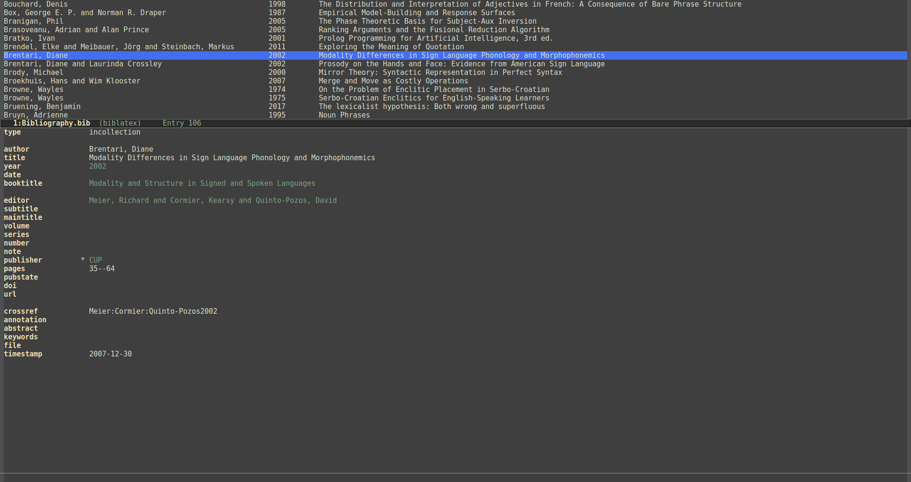
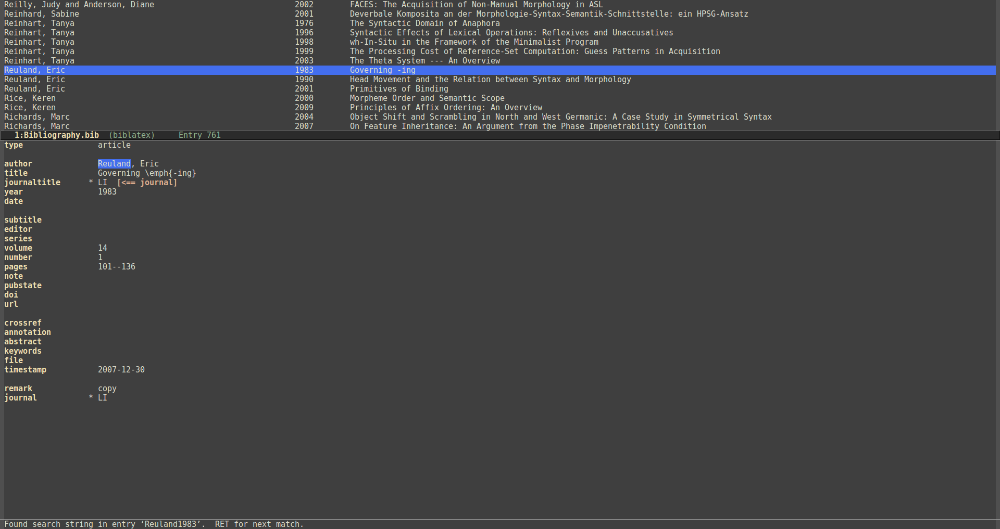
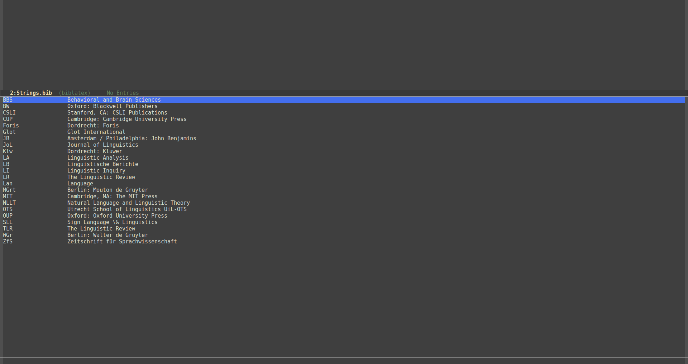

Ebib is a program for managing BibTeX and biblatex databases that runs inside Emacs. It allows you to manage bibliography files without having to edit the raw .bib files.
biblatex files.Visually, Ebib is not very spectacular, but the following screenshots give an impression. Click on the images to enlarge them.

The first screenshot shows Ebib’s standard layout. The field values displayed in a lighter gray colour come from the cross-referenced entry.

In the second image, which uses an alternative partial-frame layout, the string "Geraci" is highlighted as the result of a text search. It also shows a buffer with a note for the highlighted entry.

The third screenshot shows the strings buffer in the lower window, where you can edit the @String definitions in the database.
The complete user manual for Ebib is available in html format here. If Ebib is installed from Melpa, the manual is also available inside Emacs in Info format.
The easiest way to install Ebib is to use Melpa.
If you want to download the source, you can clone the git repository for Ebib, or get a tar ball from the Github releases page. Note that Ebib depends on parsebib, which therefore also needs to be installed.
If you want to ask a question or report an issue, you can send me an email, or, if you happen to have a Github account, open an issue on the Github issue tracker.